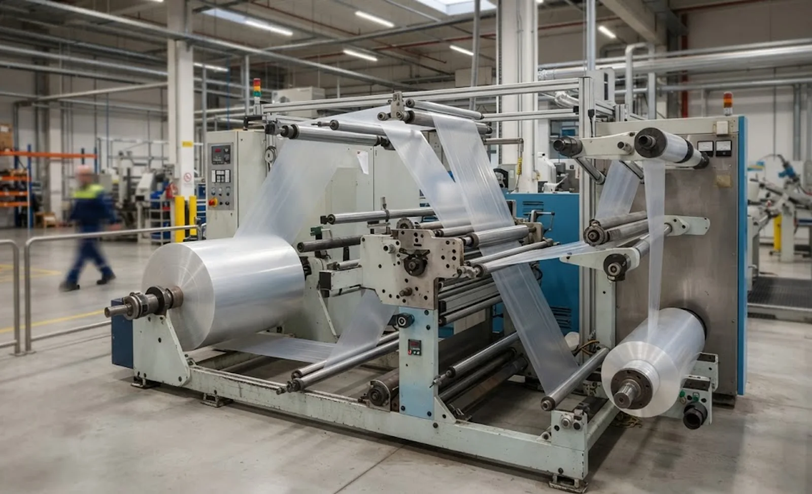
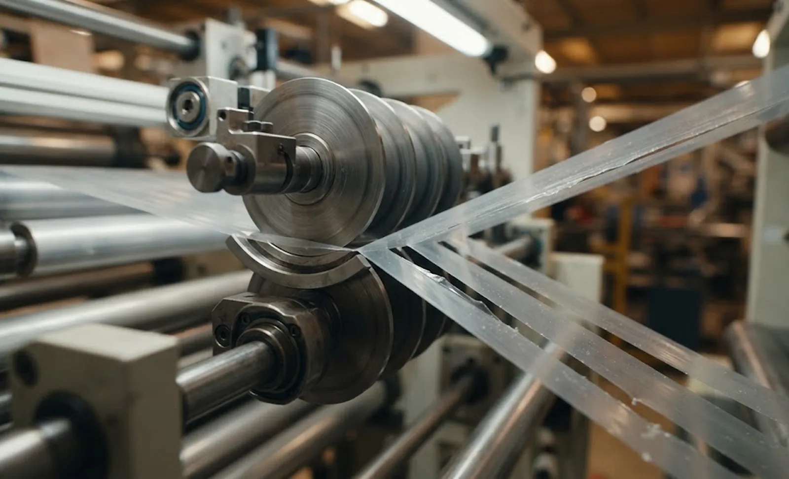

Published October 7, 2026 | By HDPTH Technical Editorial Team

Buyers specify line speed, web width, roll weight and automation level, then leave the most decisive variable to chance: the mechanical behaviour of the film itself. Two rewinders with identical speed ratings behave completely differently on a stiff 50 µm polyester versus a soft 30 µm polyethylene, because the web decides how hard you can pull, how the roll builds and how cleanly the blade separates the lanes.
The four tensile numbers that define your window
Tensile testing stretches a film strip until it fails and records the force along the way. Four values from that curve matter to a slitter rewinder buyer:
- Yield strength — the stress where the film stops recovering elastically and starts to deform permanently. Slitting tension must stay below it; necking begins above it.
- Elongation at break — how far the film stretches before failing. High-elongation webs absorb tension changes; low-elongation webs turn the same stress into web breaks.
- Modulus — stiffness in the elastic region. Stiff webs transmit tension changes instantly and demand fast control response; soft webs cushion them.
- MD versus TD anisotropy — oriented films can be several times stronger in the machine direction than across it. A spec from one direction alone hides half the truth.
Ask your supplier for these values in both directions, on the gauge you buy. A sheet reporting only tensile strength is not enough — your process lives below the yield point.
Tension: work inside the elastic region
The rule of thumb is to run web tension between roughly 10 and 25 percent of the film’s machine-direction yield strength, with thin, wide or sensitive webs at the lower end. Within that band the web recovers elastically; beyond it, permanent deformation appears as necking, width loss and lanes that behave differently from the parent web. Tension also interacts with draw: a speed mismatch between nips stretches the web by exactly the speed difference, adding to the tension you dialled in.
The buyer’s question is not “what is the maximum tension” but “how is tension measured, controlled and tapered across the roll build”. Compare load cell and dancer control against the response your modulus demands, confirm support for tapered tension profiles so a roll wound at constant stress does not crush its core, and treat films with unusual elasticity as the elastic web tension guide describes.
Winding: the web remembers every newton
Whatever stress you apply during winding is stored in the roll and redistributes afterwards. High-elongation films relax visibly: wraps contract, soft rolls telescope, and a roll that measured perfect at the rewinder is out of round a day later. Stiff films hold geometry but forgive less — a single tension spike prints a hard band through the roll. Match the winding system to the web’s relaxation behaviour: center winding with torque control for soft films, surface or combination winding where firmness matters, as set out in center versus surface winding and the rewind torque control guide.

Knives: the web stretches before it cuts
At the knife, tensile properties decide how the web meets the blade. Extensible films such as polyethylene stretch locally ahead of the edge, so a dull or poorly angled razor pushes and tears rather than parts the web. Stiff, high-modulus films resist penetration and reward supported cutting: shear slitting between matched blades, or score cutting against a hardened anvil roll. Laminates add a further variable — each layer cuts differently, and delamination risk rises with tension. The comparison in razor, shear and score slitting maps directly onto the tensile data you collected, and the notes in film slitter rewinder selection show how PE, PET and multilayer structures translate into machine options.
Writing the window into your specification
The tensile data becomes valuable when it appears as questions in your enquiry, forcing the supplier to size the machine against your web:
| Tensile property | Specification question | Why it matters |
|---|---|---|
| Yield strength, MD and TD | What percentage of yield is working tension at max speed and width? | Keeps tension inside the elastic region on your web |
| Elongation at break | How is taper controlled from core to full roll diameter? | High-elongation webs relax; taper is their main defence |
| Modulus | What is the tension control loop response? | Stiff webs need fast control; soft webs need stability |
| Anisotropy | Which knife method is recommended for this web, and why? | Stretch and stiffness at the blade decide razor, shear or score |
| Gauge variation | How does the machine handle gauge bands and profile variation? | Thick bands concentrate tension and start web breaks |
Close the loop with a trial on your own film: data sheet on the table, tension and torque curves logged, and a signed record of the settings that produced good rolls. That proven slitting window is worth more than any catalogue figure, and it is exactly what a structured material trial should deliver.
Slitting a film the catalogue has never seen?
Send HDPTH your film data sheet — gauge, yield, elongation and structure — plus target widths and roll sizes. We size tension, winding and knife method inside your web’s limits, then prove them on your material before shipment.
Submit Your Project InquiryFrequently asked questions
What percentage of a film’s tensile strength should slitting tension use?
A common working range is 10 to 25 percent of the film’s machine-direction yield strength, with sensitive or thin webs at the lower end. Let a trial with your own material set the final taper curve. Staying inside the elastic region keeps the web recovering instead of deforming.
Why does my film web neck or stretch during slitting?
Necking means tension has pushed the web past its yield point, so it deforms permanently instead of elastically. Causes include a setpoint sized for a different film, excessive draw from a speed mismatch, and gauge bands concentrating load. The fix is lower tension, matched zone speeds and profiles that taper as the roll builds.
Does high-tensile film need a different knife than soft film?
Usually yes. Stiff, high-modulus films such as polyester resist blade penetration and work well with shear or score cutting, where the web is supported. Soft, extensible films such as polyethylene stretch ahead of the blade and often favour sharp razor slitting with minimal wrap. Elongation and modulus, not habit, should drive the method.
How do MD and TD properties change machine selection?
Most films are anisotropic: machine-direction strength, elongation and modulus differ from cross-direction values, sometimes by a factor of two. A specification from one direction alone hides where necking or breaks will start. Ask for tensile data in both directions, and have tension, rollers and knives sized against both.
Should tensile data be included in machine trials?
Yes — it turns a trial from a demonstration into a qualification. Bring the data sheet with MD and TD yield, elongation and modulus, and ask for tension, torque and speed curves logged during the run. You leave with a slitting window proven on your web, not a generic one.